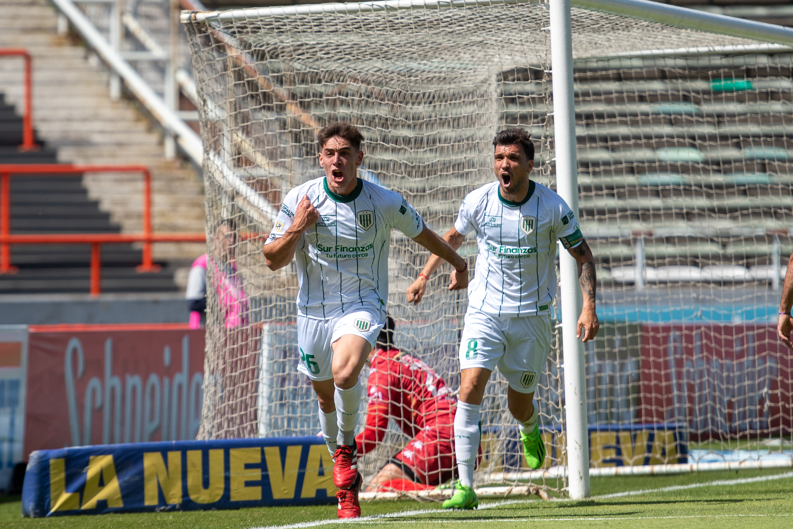

BIENVENIDOS A LA PAGINA DEL GRANDE SUR
Ultimas Noticias
Banfield cayo en la puerta de la final
La T llegó por primera vez con claridad a los 20’ de la segunda etapa, con un disparo de Diego Valoyes. Y 13´ más tarde, Santos convirtió el gol que sentenció el pasaje a la final. En el tramo final del encuentro, Banfield empujó y tuvo una chance muy clara: Agustín Urzi obligó a Aguerre a exhibir sus reflejos. Talleres, que este año llegó a cuartos de final de la Libertadores y que terminó 13° en el último torneo, tendrá revancha de la final perdida el año pasado e irá por la gloria.
Banfield empato 0-0 frente Sarmiento

Banfield y Sarmiento empataron 0-0, en el que hubo muy pocas situaciones de gol, y mucha friccion y protesta
Palabras de Sanguinetti tras la derrota"
Banfield cayo en la fecha 27 ante un durisimo Independiente. Estas fueron algunas de las declaraciones de Sanguinetti luego del partido: “Fue un partido muy parejo donde no hubo situaciones muy claras, incluso el gol fue fortuito. Con 10 hombres tuvimos dignidad, el equipo no perdió nunca el orden, legó y tuvo algunas situaciones claras para llegar al empate” “Lo más importante es que no se nos caigan más jugadores. Necesitamos compensar las cargas y saber que no hay tiempo para recuperarse”. “Una de las cosas buenas es que Cabrera pudo completar algunos minutos sin dolor”. “Mago tiene un corte en el muslo y Coronel, una torsión en el tobillo”
Banfield saco 3 puntos en Mar del plata
Banfield venció 1-0 a Aldosivi en el José María Minella por la fecha 25 de la Liga Profesional. A los 24′ de la primera parte, Gregorio Tanco anotó el único gol del Taladro. Fue el primer partido de Javier Sanguinetti en su nuevo ciclo al frente del equipo.
.jpg)